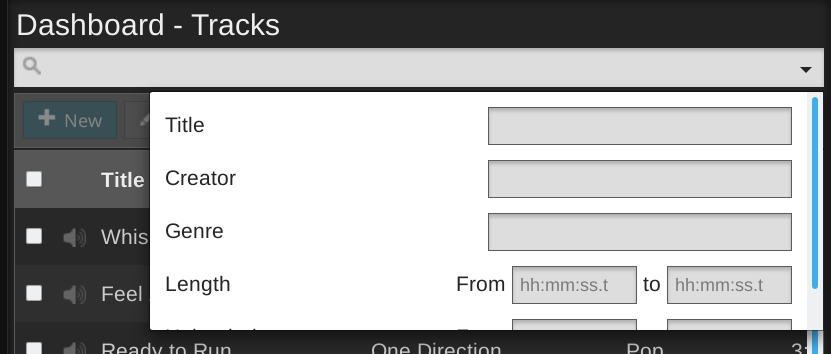
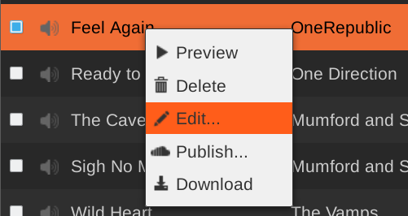

Tracks
This page of the LibreTime interface enables you to search the media library, sort and display the search results by the criteria that you choose, audition library items, and drag and drop those items into a playlist. You can also adjust fade and cue points, create smart blocks (automatically generated playlists), or add incoming web streams to the library. The Library page is not visible to Guest users.
Searching the library
In the library table which opens, the upper section is for the Advanced Search Options, which enable you to search within individual fields of the database such as Title or Creator. Like an Internet search engine, you do not have to type in the correct upper or lower case, press the Enter key, or even type the whole of the search term before matches from the LibreTime library are displayed.

At the bottom of the library table, click the First, Previous, Next, Last or individual page number buttons to browse the search results. Right-clicking an item in the search results will display the available options for that item in a pop-up window.
The columns displayed in the search results correspond to the fields available for advanced searches (except for Scheduled and Playlist / Block, which indicate if a particular item is in use). To change the fields which can be searched, click the Show / hide columns button on the right side of the table, just above the search results.

Click the metadata column headings such as Title, Creator, Album, or Genre to sort the entries in ascending or descending order. In the second column, audio files are represented by a loudspeaker icon, while playlists ares represented by a document icon. Smart blocks have a think bubble icon, and web streams have an arrow icon.
To find all files uploaded by yourself, or another specific member of the station staff, click the Show / hide columns checkbox which enables the Owner column. After you have made your search, you can click the header of the Uploaded column to find the items that person added to the server most recently.
Advanced search terms are matched using 'and' rather than 'or' logic, to narrow your search. Perhaps you have tagged some jazz-flavoured station idents intended for use in a particular show called 'Jazz Maverick' with the Album tag of Jazz Maverick and a Genre of Ident. You could then find exactly the idents you are searching for by typing maverick and ident into the respective advanced search fields.
If your jingles are tagged with Jingle in the Genre or other fields, you can very easily find them by entering jingle into the search field. The same technique can be used to find advertising and promotional files. (See the chapter Preparing media for ingest for tips on batch tagging files with metadata). Unlike advanced searches, simple searches use 'or' logic for multiple search terms, so a simple search for jingle ident will return items matching either keyword.
Clicking on an item in the library table opens a pop-up menu which enables you to audition the item, or remove it from the LibreTime library. Media types which cannot be auditioned directly in a web browser, such as FLAC, have a lock icon instead of a loudspeaker icon, but these files can be downloaded to your local computer for audition instead. The Delete option should be used with caution, because this action cannot be undone. For media files, you can also Edit Metadata stored for the file using this menu.
